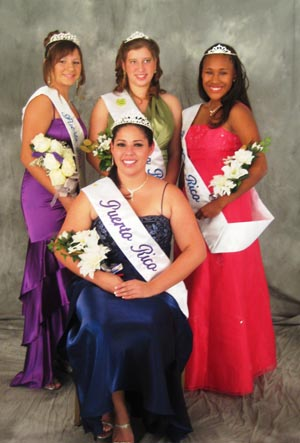

HOME
My Experience as Queen by Daisy Cruz |
|
HPRSD 2008-09 Queen Daisy Cruz in front of House of Puerto Rico What did it take, you might ask, for me to become involved and feel like I was a part of the House of Puerto Rico? Well, it was nothing more than a phone call from Angie Freeman; someone that I had heard a lot of great things about, but had never met in person. After talking with her a few minutes over the phone, I heard something that made my mind soar. “What? Run for queen for the House of Puerto Rico? Me?!” I thought quietly in my head. “I’m a college student, not a beauty queen...” All of this and more ran through my head as I listened to Angie’s friendly voice. Little did I know, that phone call would change my association with the House of Puerto Rico. After moments of pondering the proposal of running for queen, I decided to go for it. I was going to take a chance and hope for the best. Even if I wasn’t selected, there had to be something valuable that I could derive from this experience. When I attended the practice rehearsal, I saw the other girls; they were friendly, caring, confident and enthusiastic as they stood side by side, with their strict ‘Cinderella feet’ and improving posture. From that moment on, I knew that ultimately it wasn’t about the crown, but about the person who’s wearing it. Someone’s physical appearance is minimal compared to their self-confidence, poise, personality and beliefs. It has been a few months since then, and I couldn’t be more thankful for the unforgettable journey I have embarked on. A majority of membership votes showed that I had been chosen as the queen of the House of Puerto Rico, which became known at the House of Puerto Rico Lawn Program. When I first heard the news, I stood on stage, adorned with my vibrant folkloric dress and was accompanied by the rest of the contestants. I can still remember the cheerful summersault my heart made, which was probably accompanied by a great smile. As I look back at all of the things that I have accomplished in the past few months, I can’t help but smile. The House of Puerto Rico has opened countless doors to new opportunities, experiences, memories, and positive change, as long with opportunity for self-discovery and personal development. Representing HPRSD at the House of Pacific Relations Coronation Gala - November 2008. HPRSD 2008-09 Queen Daisy Cruz and Princesses (top l-r) Victoria Cline, Kelsy Thompson, and Eva Flores My experience would have not been the same if it wasn’t for my close involvement with the group of Las Reinitas Borincanas. This group is primarily composed of the House of Puerto Rico mini princesses, junior princesses, princesses, and myself. It is because of this group, and our main advisor, Angie Freeman, that I have had the chance to become further involved in other ways other than just attending meetings and formal events. So far, I have been able to learn and perform danza with Las Reinitas group at various events, including the House of Puerto Rico Gala and Father Joe’s Villages. Also, I have worked with the other girls in baking and decorating Christmas cookies, and later distributing them with the parranda group to elderly nursing homes and Andres Patio restaurant. The more formal events I have attended have been a coronation dance where I was crowned along with other queens from the House of Pacific Relations. I was also asked to attend an installation dinner in commemoration of the new House of Pacific Relations officers. Aside from these events, I am required to attend events for the House of Pacific Relation Queen’s Association, such as monthly meetings and December Nights festivities. Sharing this extraordinary experience with generations from now, I will look back at one of the most memorable experiences of my life. There are not enough thank you’s to convey how thankful I am for being given the opportunity to be part of the House of Puerto Rico in such a special way. Not only do I feel more involved with the House of Puerto Rico, but also more aware of the Puerto Rican culture. It is my dream to continue seeing as much, or even more, youth involvement with the House of Puerto Rico. Ultimately, the future of the House of Puerto Rico will lay within us, the upcoming generations.
|
 I have attended the events and meetings of the House of Puerto Rico since my parents, Benjamin and Lori Cruz, have been members. For about nine years now, I can say that the House of Puerto Rico and its members have watched me grow. However, it is disappointing to say that it was not until just recently, that I have felt a sense of belonging and true accomplishment with the House of Puerto Rico. During my parent’s many years as members, I have seen the House of Puerto Rico as something that they, my parents and their friends, were part of. Until recently, I realized that I also had the power to be involved and contribute to the House of Puerto Rico.
I have attended the events and meetings of the House of Puerto Rico since my parents, Benjamin and Lori Cruz, have been members. For about nine years now, I can say that the House of Puerto Rico and its members have watched me grow. However, it is disappointing to say that it was not until just recently, that I have felt a sense of belonging and true accomplishment with the House of Puerto Rico. During my parent’s many years as members, I have seen the House of Puerto Rico as something that they, my parents and their friends, were part of. Until recently, I realized that I also had the power to be involved and contribute to the House of Puerto Rico.